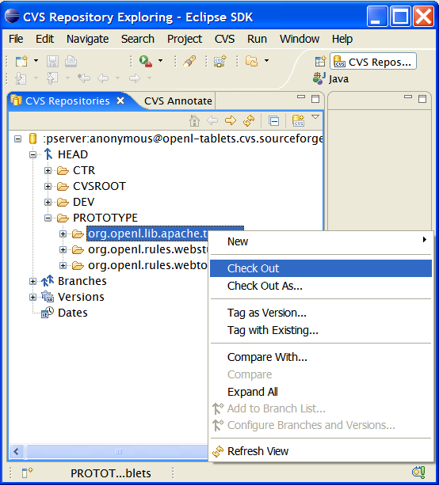
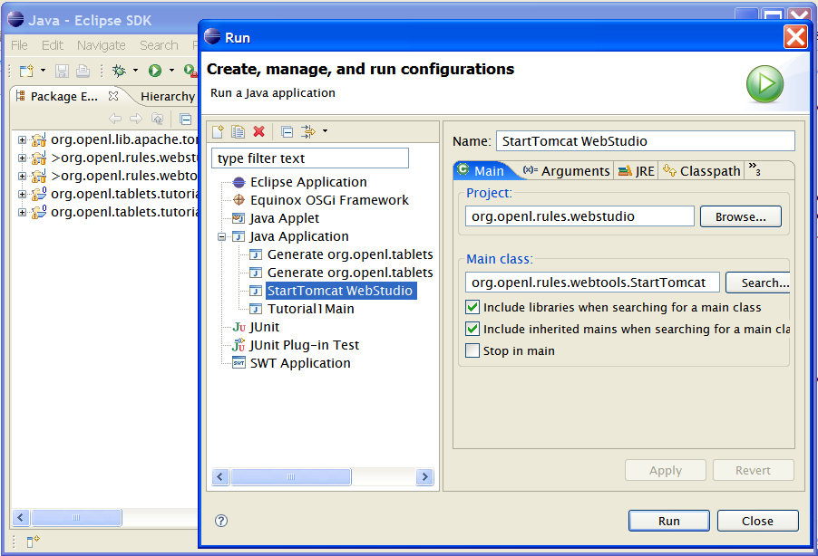

Web Studio 4.0.1 installation procedure remained the same as for 3.1.0.7.
Web Studio is still available only as Eclipse project from OpenL Tablets CVS. We will think out other packaging options for server-based Studio when browser-based edior becomes available.
1. Install OpenL Tablets Plugin version 4.0.1 Build 1 or higher
2. In Eclipse create a Repository Location using the following credentials:
:pserver:anonymous@openl-tablets.cvs.sourceforge.net:/cvsroot/openl-tablets
3. Check Out the following projects from the folder /PROTOTYPE:

StartTomcat Webstudio

OpenL Tablets Web Studio was developed under Mozilla Firefox 2 and also tested with IE Explorer 7. We used Office 2000 for office-related testing. In case if you have problems using Web Studio with other configurations (unlikely) please report them to the project forums.
Vista Users will need to save MS Office documents in MS Office 2000-3 format (POI library that we use to parse Office documents does not support new Office 2007 file format)